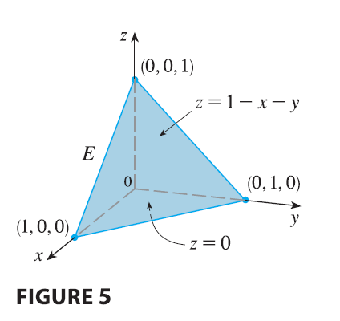
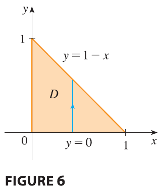

EXAMPLE 2 Evaluate \(\iiint_E z dV\), where \(E\) is the solid tetrahedron bounded by the four planes \(x = 0, y = 0, z = 0,\) and \(x + y + z = 1\).

SOLUTION When we set up a triple integral it’s wise to draw two diagrams: one of the solid region \(E\) (see Figure 5) and one of its projection \(D\) onto the \(xy\)-plane (see Figure 6). The lower boundary of the tetrahedron is the plane \(z = 0\) and the upper boundary is the plane \(x + y + z = 1\) (or \(z = 1 - x - y\)), so we use \(u_1(x, y) = 0\) and \(u_2(x, y) = 1 - x - y\) in Formula 7. Notice that the planes \(x + y + z = 1\) and \(z = 0\) intersect in the line \(x + y = 1\) (or \(y = 1 - x\)) in the \(xy\)-plane. So the projection of \(E\) is the triangular region shown in Figure 6, and we have

\[ E = \{(x, y, z) | 0 \le x \le 1, 0 \le y \le 1 - x, 0 \le z \le 1 - x - y\} \tag{9} \] This description of \(E\) as a type 1 region enables us to evaluate the integral as follows: \[ \iiint_E z dV = \int_0^1 \int_0^{1-x} \int_0^{1-x-y} z dz dy dx = \int_0^1 \int_0^{1-x} \left[ \frac{z^2}{2} \right]_{z=0}^{z=1-x-y} dy dx \] \[ = \frac{1}{2} \int_0^1 \int_0^{1-x} (1 - x - y)^2 dy dx = \frac{1}{2} \int_0^1 \left[ -\frac{(1 - x - y)^3}{3} \right]_{y=0}^{y=1-x} dx \] \[ = \frac{1}{6} \int_0^1 (1 - x)^3 dx = \frac{1}{6} \left[ -\frac{(1 - x)^4}{4} \right]_0^1 = \frac{1}{24} \]